Khí công theo nghề
Khí công riêng của từng nghề
Khí công Đao Khách
| Biểu tượng | Tên khí công | Thuộc tính |
|---|---|---|
| Lực Phách Hoa Sơn | Tăng tấn công tối thiểu | |
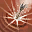 | Nhiếp Hồn Nhất Kích | Tăng chính xác khi tấn công |
 | Liên Hoàn Phi Vũ | Tăng tỷ lệ đánh liên hoàn |
 | Tất Sát Nhất Kích | Tăng tỷ lệ chí mạng |
 | Cuồng Phong Vạn Phá | Kéo dài thời gian trạng thái phẫn nộ |
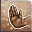 | Tứ Lưỡng Thiên Cân | Phản lại toàn bộ sát thương lên quái hoặc đối thủ khi PK / PvP |
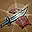 | Bá Khí Phá Giáp | Giảm 20% phòng thủ của đối phương |
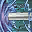 | Chân Vũ Tuyệt Kích | Tăng tỷ lệ đánh chí mạng lên đối phương |
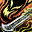 | Ám Ảnh Tuyệt Sát | Tăng 20% tấn công |
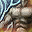 | Ổn Như Thái Sơn | Tăng phòng thủ theo % đồng thời tăng sinh lực |
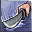 | Cuồng Phong Đao Khí | Mở rộng phạm vi của chiêu đánh lan (số quái trúng đòn không đổi) |
Khí công Kiếm Khách
| Biểu tượng | Tên khí công | Thuộc tính |
|---|---|---|
 | Trường Hồng Quán Nhật | Tăng tấn công tối đa |
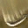 | Bách Biến Thần Hành | Tăng tỷ lệ né tránh |
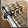 | Liên Hoàn Phi Vũ | Tăng tỷ lệ đánh liên hoàn |
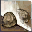 | Tất Sát Nhất Kích | Tăng tỷ lệ chí mạng |
 | Cuồng Phong Vạn Phá | Kéo dài thời gian trạng thái phẫn nộ |
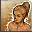 | Hộ Thân Cương Khí | Giảm 50% sát thương phải nhận |
| Di Hoa Tiếp Mộc | 50% sát thương gây ra cho đối phương được hồi thành sinh lực cho bản thân | |
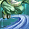 | Hồi Liễu Thân Pháp | Tăng tỷ lệ né đòn võ công của đối phương và chuyển 30% thành sát thương của mình |
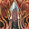 | Phá Thiên Nhất Kiếm | Tăng tấn công bằng mức tấn công khi nhân vật ở trạng thái phẫn nộ |
| Nộ Khí Xung Quan | Tăng tỷ lệ nhận thêm điểm phẫn nộ | |
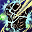 | Nhân Kiếm Hợp Nhất | Giảm 50% phòng thủ đối phương khi khí công phát động |
Khí công Thương Khách
| Biểu tượng | Tên khí công | Thuộc tính |
|---|---|---|
| Kim Chung Cương Khí | Tăng phòng thủ | |
| Vận Khí Liệu Thương | Tăng hiệu quả hồi phục khi dùng dược phẩm | |
 | Liên Hoàn Phi Vũ | Tăng tỷ lệ đánh liên hoàn |
 | Tất Sát Nhất Kích | Tăng tỷ lệ chí mạng |
 | Cuồng Phong Vạn Phá | Kéo dài thời gian trạng thái phẫn nộ |
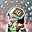 | Hoành Luyện Thái Bảo | Tăng 160 sinh lực tối đa |
| Càn Khôn Na Di | Tăng tấn công võ công và tỷ lệ chí mạng | |
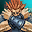 | Linh Giáp Hộ Thân | Tăng phòng thủ võ công |
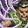 | Nộ Ý Chi Hống | Tăng điểm phẫn nộ nhận được |
| Dĩ Công Vi Thủ | Tăng phòng thủ bằng 20% tấn công | |
| Cuồng Thần Hàng Thế | Tăng uy lực của Cuồng Phong Vạn Phá |
Khí công Cung Thủ
| Biểu tượng | Tên khí công | Thuộc tính |
|---|---|---|
| Bách Bộ Xuyên Dương | Tăng chính xác khi tấn công | |
| Liệp Ưng Chi Nhãn | Tăng tầm đánh | |
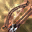 | Ngưng Thần Tụ Khí | Tăng tấn công tối thiểu |
 | Tất Sát Nhất Kích | Khi đánh thường, tăng tỷ lệ chí mạng |
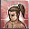 | Cuồng Phong Vạn Phá | Kéo dài thời gian trạng thái phẫn nộ |
 | Tâm Minh Nhãn Lượng | Tăng sinh lực tối đa |
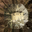 | Tâm Thần Ngưng Tụ | Khi đánh thường, tăng tỷ lệ đòn mạnh |
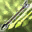 | Lưu Tinh Tam Thỉ | Đánh thường liên tiếp 3 lần |
| Xuyên Tâm Phá Hồn | Tăng tấn công khi trang bị cung | |
| Vô Ảnh Ám Tiễn | Khi đánh thường, có tỷ lệ tung chiêu đặc biệt | |
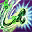 | Độc Bộ Thiên Hạ | Khi đánh thường, có tỷ lệ tung chiêu đặc biệt |
Khí công Đại Phu
| Biểu tượng | Tên khí công | Thuộc tính |
|---|---|---|
| Vận Khí Hành Tâm | Tăng tốc độ hồi nội lực | |
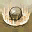 | Thái Cực Tâm Pháp | Giảm nội lực tiêu hao khi dùng võ công |
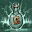 | Thể Huyết Bội Tăng | Tăng sinh lực tối đa |
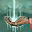 | Tẩy Tủy Dịch Cân | Tăng nội lực tối đa |
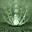 | Diệu Thủ Hồi Xuân | Tăng hiệu quả trị liệu |
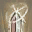 | Trường Công Kích Lực | Tăng tấn công võ công |
| Hộ Thân Thần Khí | Kéo dài thời gian hiệu lực của võ công hỗ trợ | |
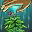 | Tăng Vận Thành Công | Tăng tỷ lệ chế dược thành công |
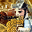 | Vạn Kim Điền Sơn | Tăng tỷ lệ rơi đồ và điểm võ huân nhận từ quái |
| Cửu Thiên Chân Khí | Tăng hiệu quả hồi phục và hiệu quả võ công hỗ trợ | |
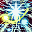 | Chân Khí Liệu Thương | Có tỷ lệ trị liệu gấp đôi |